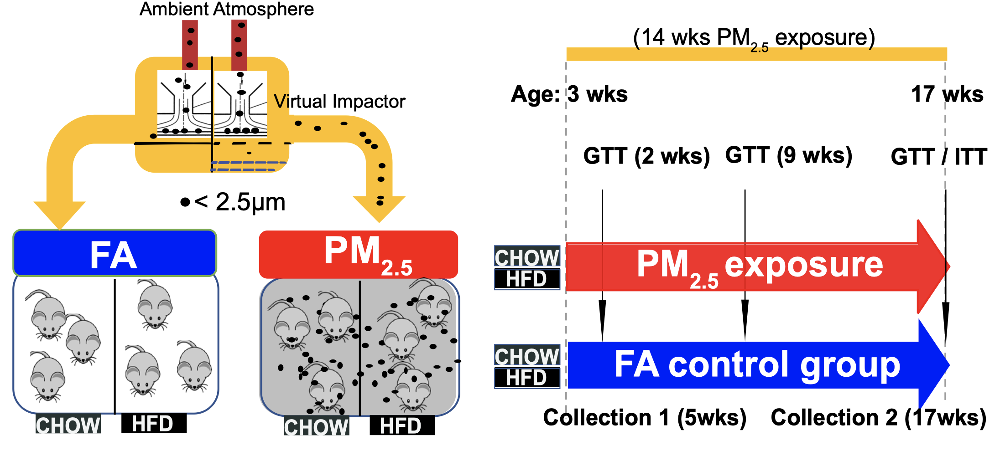

Predicting aromatase levels using blood biomarker data
Waiting for a dataset
Re-analysis of the DXA study RNA-seq data
Compare Ow/OB vs. Normal/Uw postmenopausal. Compare Ow/OB vs. Normal/Uw premenopausal. What are the differences in the two comparisons?
Compare Ow/OB postmenopausal vs. Ow/OB premenopausal. What are the differences in gene expression?
Conduct 3-way comparison where you compare this subset of Ow/OB (that resemble normal/Uw) vs. all the other Ow/OB (majority of Ow/OB) vs. Normal/Uw.
Divide VEGF-A into high vs. low based on median value. Evaluate gene expression in these two groups analogous to the way you compared gene expression in high vs. low trunk fat or CLS-B+ vs. CLS-B-.
Compare all other covariates for high vs. low VEGF-A mRNA.
Analysis of data related to serine MS
Paper submission ready
Taiwan study
Data preparation and analysis of the clinicopathologic data, CLS-B, adipocyte diameter, biomarker and body composition data)
Analysis of the Taiwan study RNA-seq data
2019
BRCA1/2 RNAseq study
DE genes identification associated with type of BRCA mutation (BRCA2 vs. BRCA1) based on univariable analysis and maybe multivariable analyses later in the full cohort.
DE genes identification in association with having invasive disease or not in the full cohort (n=130), BRCA1 cohort(n=70), and BRCA2 cohort (n=60)
Univariable DEG analysis (CLSB, BMI.cat2, menopausal status) in subjects without invasive disease in the BRCA1/2 cohort (n=59), BRCA1 cohort (n=31), BRCA2 cohort (n=28)
DE genes identification associated with type of BRCA mutation (BRCA2 vs. BRCA1) in subjects without invasive disease in the BRCA1/2 cohort (n=59)
Bayesian model averaging approach for RNA-seq counts data (BMA-seq) and its application
Develop a new statistical method using Bayesian model averaging to identify differentially expressed genes associated with one or more phenotypes, as well as their interactions.
Develop R package BMAseq using Bayesian model averaging to analyze observational gene-expression data
Apply the Bayesian model averaging method to large scale public RNA-seq gene expression data
Apply the Bayesian model averaging method (BMA-seq) to observational metabolomics data to improve differentially expressed (DE) metabolites identification in high dimensional setting
Liver transcriptome map of air pollution \(PM_{2.5}\)

Brain transcriptome map of air pollution \(PM_{2.5}\)
Construct data pipeline of both EdgeR and DESeq2 to identify differentially expressed genes associated with the exposure to ultra-fine dust, PM2.5
Check the distribution by Relative Log Expression (RLE) and Principal Component Analysis (PCA) plots
Normalize each sample and removed unwanted variances and filtered top 5,000 genes by p-values from EdgeR and DESeq2
Perform DE (Differential Expression) analysis using EdgeR and Gene Ontology (GO) Term analysis on six different brain sub-areas and liver cells.
Conduct pathway analysis using Ingenuity Pathway Analysis (IPA) software
Application of a Bayesian Model Averaging Method to Observational Metabolomics Data Analysis
Assist the advisor with developing a new statistical method using Bayesian model averaging to identify differentially expressed genes associated with one or more phenotypes, as well as their interactions.
Apply the Bayesian model averaging method (BMA-seq) to observational metabolomics data to improve differentially expressed (DE) metabolites identification in high dimensional setting
Rate Of General Anesthesia Use For Cesarean Delivery Among Anesthesiologists With And Without Fellowship Training in Obstetric Anesthesia
Fitted the logistic regression model to identify whether the fellowship-trained anesthesiologists are more or less likely to provide general anesthesia for non-routine C-section as compared to non-fellowship trained anesthesiologists
Identified the significant difference between general and neuraxial anesthesia and the odds of using general anesthesia is 0.471 times lower in attending fellowship training anesthesiologists compared the non-fellowship training anesthesiologists
Cost-Effective Optimization of Model-Based Prediction of Cardiovascular Disease (CVD)
Aimed to increase the accuracy of CVD diagnosis using a model-based approach
Determined the demographic factors and medical tests that help predict the likelihood of heart disease using proportional odds model and logistics regression
Identified a combination of necessary medical tests that help predict the probability of heart disease in a cost-effective manner and reduced the exam cost by $110.17
Identified that there is no difference in the proportions of 3-month progression status between patients in the NEPC and non-NEPC group treated with alisertib
Determined that there is no association between 3-month progression-free survival for all clinical characteristics and gene abnormalities
Identified an association between PSA level and prior systemic therapies between NEPC and non-NEPC groups treated with alisertib
Determined that low birth weight is associated with the mother’s premature labor history, race, smoking status, weight of the last menstrual period, and history of hypertension
Fitted multiple generalized linear models with the model selection based on deviance and p-values
Study design of Tommy John Surgery for MLB Pitchers by Statcast Measurements
Primary Injury Factors of Ulnar Collateral Ligament Reconstruction for Major League Baseball Pitchers by Statcast Measures
Designed a study to identify major factors of Ulnar Collateral Ligament Reconstruction (a.k.a. Tommy John Surgery) for Major League Baseball Pitchers by Statcast measurements